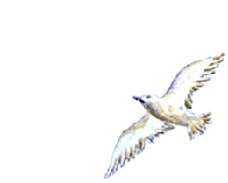

"NUM SUBLIME ATO DE AMOR O CRIADOR FORMOU O APÓSTOLO PAULO DE TARSO, UM DOS VIGOROSOS PILARES DE SUSTENTAÇÃO DO CRISTIANISMO. ESTE SITE APRESENTA O SUMÁRIO DE SUA IMPRESSIONANTE VIDA E DE SUA ADMIRÁVEL OBRA."

=ÍNDICE=
A FAMÍLIA E OS ESTUDOS - Tarso, Jerusalém, Gamaliel.
GRAVE OCORRÊNCIA - Estevão, o Mártir.
A LUZ DOMINA O ÓDIO - Perseguição aos Cristãos, A Caminho de Damasco, Conversão de Saulo.
PREGAÇÃO EM DAMASCO - Damasco (Síria), Visita a Jerusalém.
O DEDO DE DEUS - Exilado em Tarso, Barnabé e Saulo Delegados para Jerusalém, Primeira Viagem Apostólica, Igrejas e Casas Rupestre.
EVANGELIZAÇÃO APOSTÓLICA - Concílio de Jerusalém, Segunda Viagem Apostólica.
SEGUINDO COM A MISSÃO - Terceira Viagem Apostólica, Viagem a Jerusalém, Prisioneiro em Cesaréia.
JULGAMENTO, PRISÃO E MORTE - Prisioneiro de Festo, Enviado a Roma (Naufrágio), Chegada a Capital do Império, Nero Incendeia Roma, Prisão, Condenação e Morte.
A ADMIRÁVEL OBRA DE SÃO PAULO - Minuciosa explicação sobre cada Epístola escrita pelo Apóstolo; Oração a São Paulo.
E-MAIL, LINK, E FIRMAS DE BUSCAS